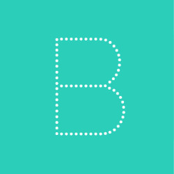

Game Frogger
Tim TST
- Ryan Owen Thionanda
- Riady Yoslim
- Zen Dharma
Gambar saya
Keyboard Interaction
Powered by bespoke-keys
Touch Interaction
Powered by bespoke-touch
Responsive Slides
Powered by bespoke-scale
- null
Bullet List
Powered by bespoke-bullets
- Bullet 1
- Bullet 2
- Bullet 3
- Bullet 4
Syntax Highlighting
Powered by Lea Verou's Prism
(function() {
function hanoi(n, a, b, c) {
return n ? hanoi(n - 1, a, c, b)
.concat([[a, b]])
.concat(hanoi(n - 1, c, b, a)) : [];
}
return hanoi(3, 'left', 'right', 'mid')
.map(function(d) {
return d[0] + ' -> ' + d[1];
});
})();
Named Route
Powered by bespoke-hash
Look up! This route has been named with a data-bespoke-hash attribute.
Just the beginning…
- Edit Pug (formerly Jade) markup in src/index.pug
- Edit Stylus styles in src/styles/user.styl
- Edit JavaScript in src/scripts/main.js
- Enjoy! :) -@markdalgleish